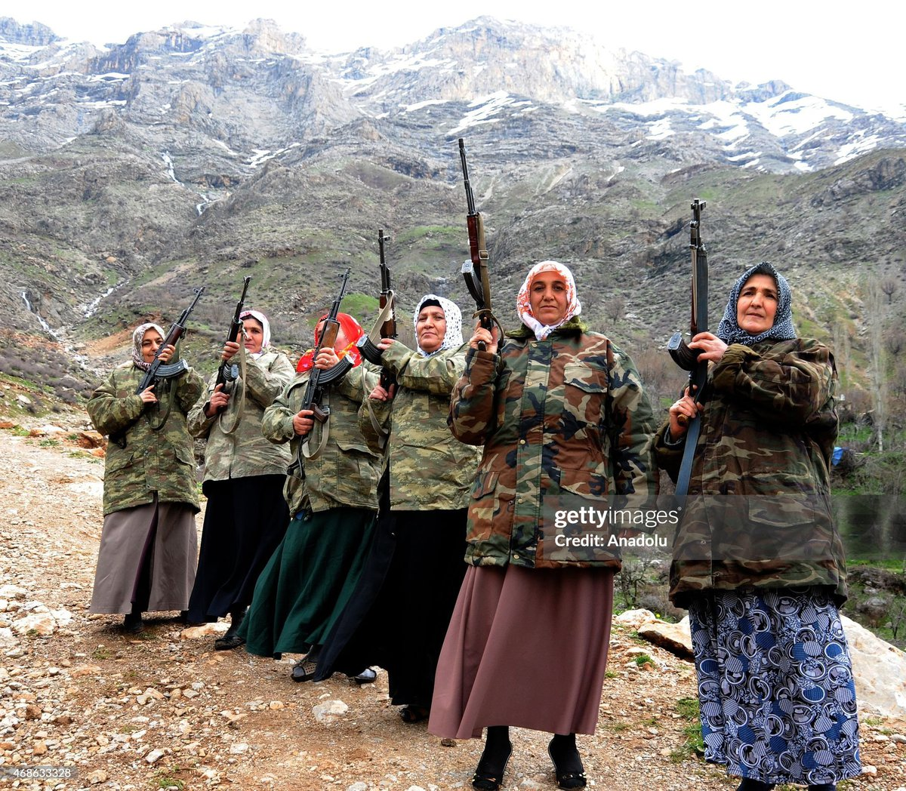

Under review
PGMs for Penetrative Political Control: The Underlying Logic of State–PGM Collaborations
States collaborate with pro-government militias (PGMs) for reasons that extend well beyond delivering violence—only around 60% of PGMs are reported to have committed violence at all. This paper argues states also rely on militias for local information and political control, using them to reward supporters and identify and punish resistance. The argument is supported with statistical modeling and a case study of Turkey’s Village Guard system.